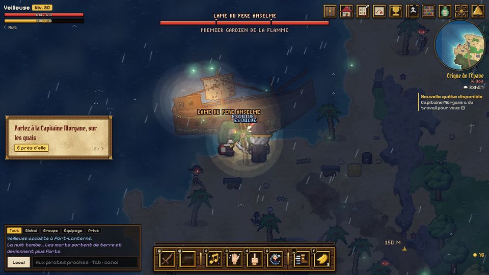
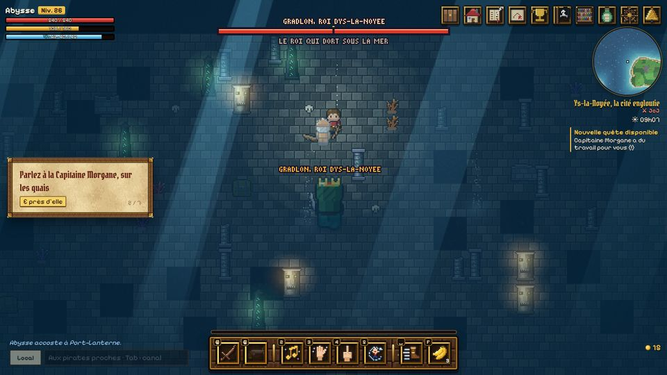
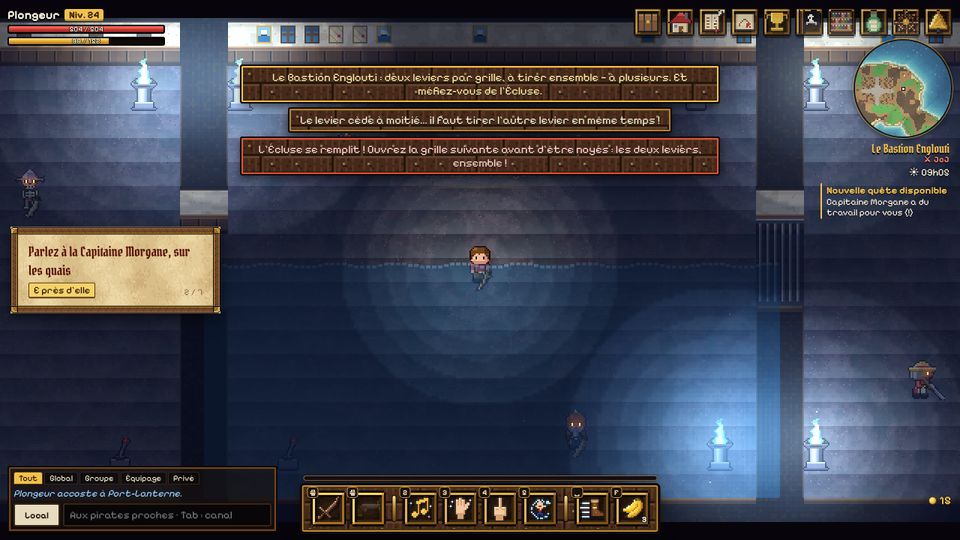
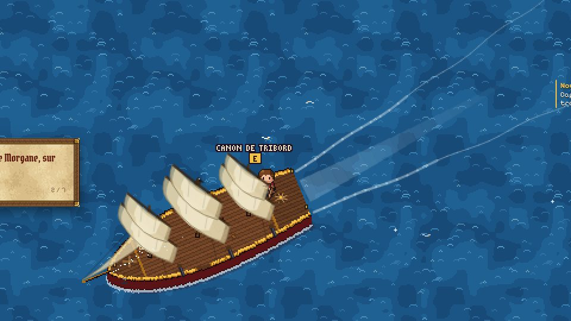
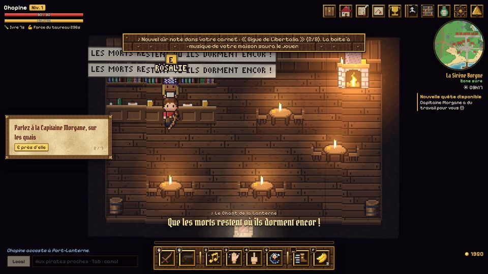
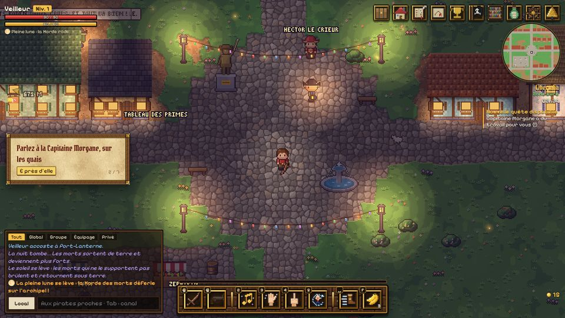
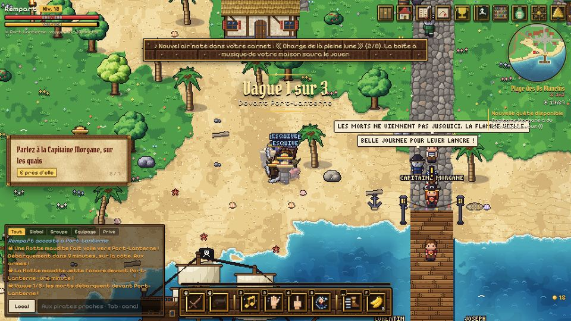

L’archipel maudit
Le Capitaine Barbe-Cendre a volé le Cœur de Corail, et la Marée Morte relève les noyés. À Port-Lanterne, seule la Flamme Bénite tient encore les morts à distance.
Débarquez sans un sou et devenez pirate : abordez les galions fantômes, plongez dans les cités englouties, gagnez la confiance des ports… et choisissez enfin ce que deviendra la Flamme. Trois fins, une seule possible pour chaque pirate.
Tout le jeu, images et musique comprises, est créé par son propre code : aucun fichier image ou son externe.

Ce qui vous attend
Des îles à conquérir, un océan à traverser et des fonds marins à explorer. Voici quelques escales de l’archipel.






La vie de pirate
Un monde persistant à partager. Ce que vous faites y laisse une trace : les gens se souviennent de vous.
Trois actes
Une grande histoire jusqu’à l’Acte III, des scènes jouées, et des personnages qui se souviennent de vos choix.
Navires légendaires
Du radeau au galion, chacun avec ses mâts, ses canons et son caractère, jusqu’à la Veuve Écarlate des héros de Libertalia, et un navire que seule la brume peut donner.
Groupes et équipages
Chat par canaux, amis, groupes qui partagent l’expérience, équipages avec pavillon et rangs, et échanges sécurisés.
La Fosse
L’arène aux combats sans mort, des duels avec paris et un classement chaque semaine. Hors de l’arène, les nouveaux venus sont protégés.
Honneur et prison
Chaque ville a sa réputation, ses taxes et ses prix. Les brigands recherchés finissent à la geôle, sauf caution.
Maisons
Jusqu’à deux propriétés à acheter, meubler et revendre : cabane, maison de ville ou manoir.
Saisons
Chaque mois, un concours de pêche et le Grand Tour de Libertalia à cheval. Les premiers du podium sont récompensés.
Brouillard et carte
La carte se dévoile au fil de vos voyages. Les bulles en surface trahissent des sites de plongée.
Musique
Une bande originale par lieu, des chansons de taverne à apprendre, et une collection à compléter.
Comment jouer
Ouvrez le lien et choisissez un nom : votre progression est gardée dans votre navigateur.
Ensemble
Tous ceux qui ouvrent la page partagent le même archipel. Le monde tourne dans le navigateur d’un des joueurs ; si celui-ci part, un autre reprend la main.
En solo
Le bouton « Jouer en solo » lance l’archipel rien que pour vous. Le jeu y passe aussi tout seul si le réseau bloque les connexions entre navigateurs.
Sur un serveur
Pour un monde public qui ne s’arrête jamais, le jeu a son propre serveur. Le code est libre de lecture sur GitHub.
Les commandes
| ZQSD | se déplacer (ou WASD, ou les flèches) |
| Clic gauche | coup de sabre vers le curseur |
| Clic droit1 | tirer ; au canon d’un navire, faire feu |
| Espace | roulade |
| E | parler, ouvrir, fouiller, entrer, armer un navire, tenir un poste, plonger |
| QD · ZS | à la barre : la roue · aux drisses : la voilure · au cabestan : l’ancre |
| C | monter en selle, en descendre |
| R | pêcher, puis ferrer |
| F | manger le meilleur soin |
| I | inventaire |
| JMK | quêtes, carte, hauts faits |
| P | compagnons : groupe, amis, équipage, honneur, saison |
| O | le codex |
| B | meubler sa maison |
| Entrée | chat ; Tab change de canal |
| 2–5 | émotes |
| H | l’aide complète |